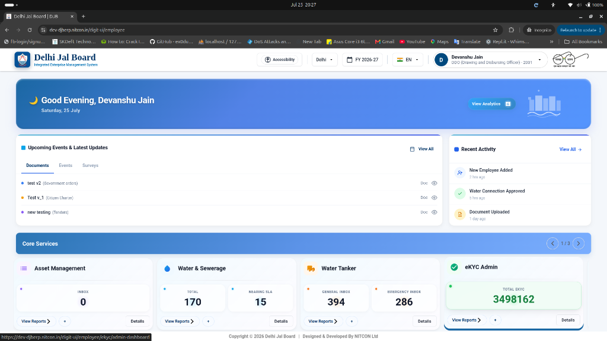
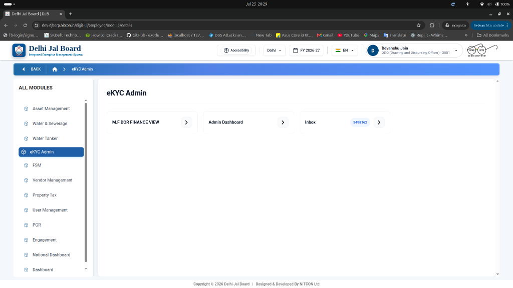
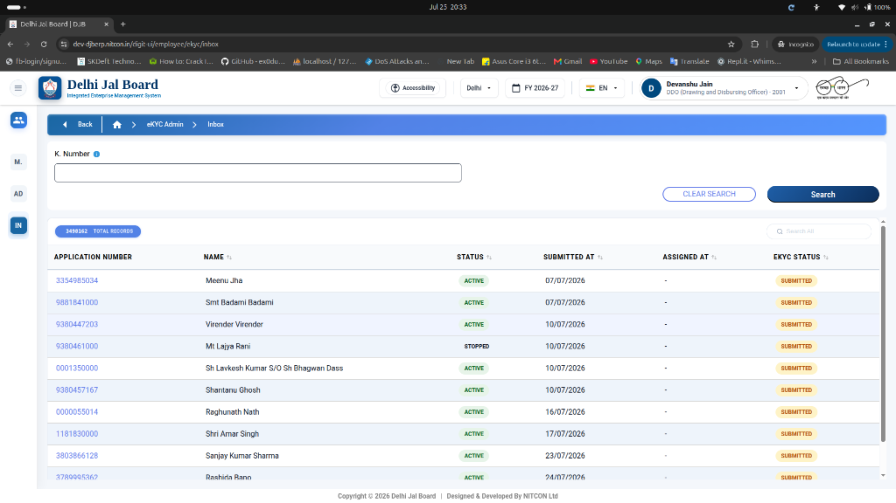
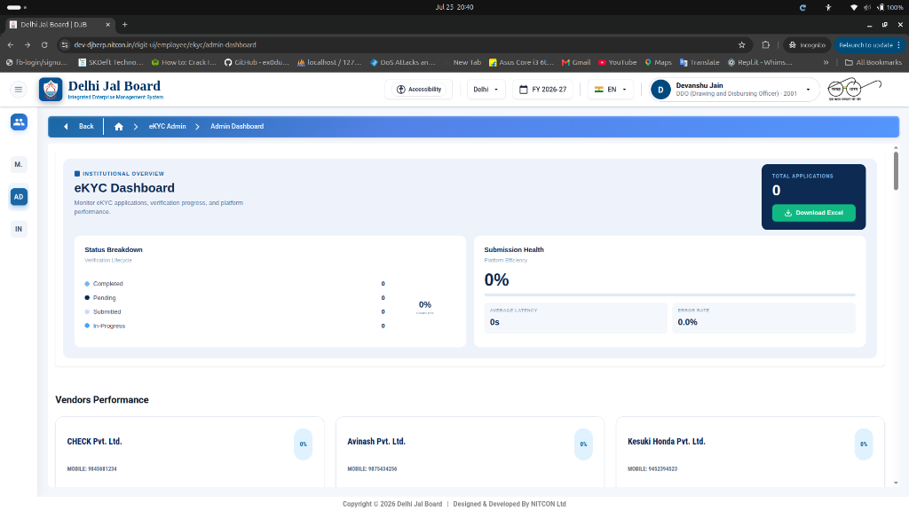

Step 1: Locating eKYC Admin Module on Dashboard
Accessing module cards under Core Services based on your assigned staff role.

Step 2: Navigating eKYC Admin Sub-Modules
Selecting operational options based on your departmental responsibilities.
/digit-ui/employee/module/details).• 📥 Inbox (Shows live counter, e.g., 3498162): Click to search, review, and process consumer applications.
• 📊 Admin Dashboard: Click to monitor total eKYC applications, platform performance, and vendor efficiency.
• 💰 M.F DOR FINANCE VIEW: Designed for executive officers to review revenue impact, agency performance, and zone-wise progress.

Step 3: eKYC Application Inbox & Searching by K. Number
Retrieving consumer eKYC applications and reviewing submission records.
/digit-ui/employee/ekyc/inbox).• Application Number: Clickable ID link (e.g., 3354985034, 9881841000).
• Name: Consumer full name (e.g., Meenu Jha, Virender Virender).
• Status: Connection state (ACTIVE / STOPPED).
• Submitted At: Date of application submission.
• Assigned At: Current staff/surveyor assigned.
• eKYC Status: Verification stage tag (SUBMITTED, PENDING, APPROVED).

Step 4: Admin Dashboard & Vendor Performance Monitoring
Tracking overall eKYC application progress, platform efficiency, and agency metrics.
/digit-ui/employee/ekyc/admin-dashboard).• Total Applications: Real-time counter of total submissions with a Download Excel button for automated report generation.
• Status Breakdown: Visual progress tracking for Completed, Pending, Submitted, and In-Progress verification lifecycles.
• Submission Health: Platform efficiency rate %, average processing latency (seconds/minutes), and system error rate %.
• Real-time cards evaluating registered vendor agencies:
- 🏢 CHECK Pvt. Ltd. (Mobile: 9845681234)
- 🏢 Avinash Pvt. Ltd. (Mobile: 9875434256)
- 🏢 Kesuki Honda Pvt. Ltd. (Mobile: 9452394523)
• Tracks completion percentage, field surveyor activity, and agency SLA compliance.

Step 5: M.F DOR FINANCE VIEW (Executive Financial & Zone Analytics)
Macro-level oversight for higher authorities (ZRO, DOR, Finance Officers, and Dept Heads).
Revenue Data & Module Progress
Full financial analytics detailing eKYC coverage, revenue integrity, bill accuracy improvements, and portal adoption across all Delhi Jal Board zones.
Agency Performance Snapshot
Search, filter, and navigate into detailed operational analytics for every assigned vendor agency, evaluating field surveyor productivity and completion rates.
Jurisdiction Performance
Top zones and divisions evaluated from the full agency dataset, highlighting top-performing revenue circles and areas needing intervention.
Critical Alerts & Efficiency
Automated flagging of SLA delays, field verification bottlenecks, workforce activity tracking, and turnaround efficiency across all revenue divisions.